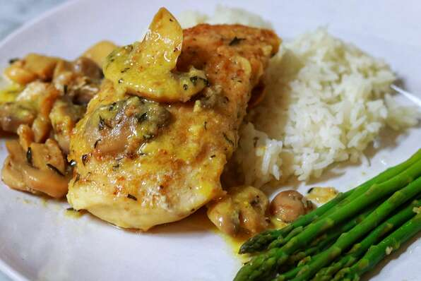

Baked Tortilla Chips

Description
Tasty tortilla chips baked at home with corn tortillas are much better than store-bought chips.
With an amazing lime and cumin flavor, these crispy, golden chips taste great with your favorite salsa, guacamole, or hummus.
Ingredients
- corn tortillas
- lime juice
- vegetable oil
- spices: salt, cumin, chilli powder
Steps
- Cut the tortillas into triangles — each tortilla should have at least 8 chips.
- Add lime juice and oil to a spray bottle and spray each chip.
- Sprinkle each chip with the spices.
- Bake the chips, flipping and re-seasoning halfway through.
- Make sure to check them often so they don't burn.
Return to main page